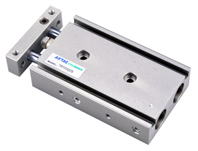
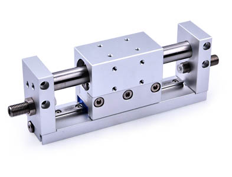
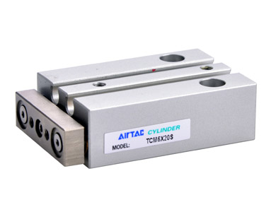
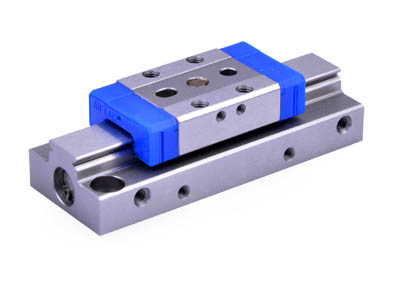
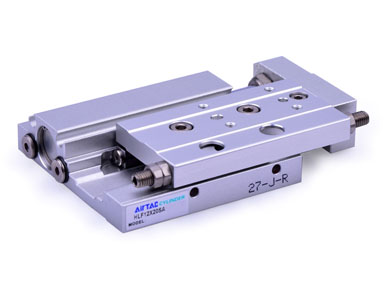
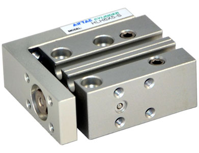
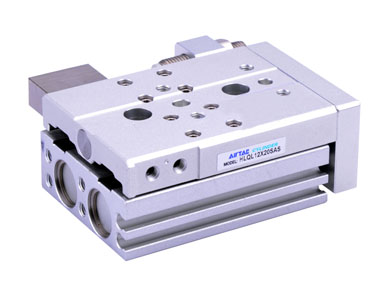
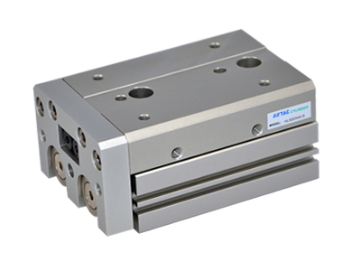
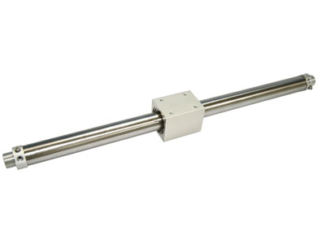

TR Series xi lanh hai ty
TR Series xi lanh hai ty: thông tin kỹ thuật, datasheet và kích thước cần kiểm tra trước khi chọn xi lanh/cơ cấu chấp hành.
RMH Series Rodless magnetic xi lanh(With Linear g...

Phần này gom mô tả kỹ thuật từ trang AirTAC và checklist chọn mã theo nhóm sản phẩm.
Nhóm Actuators biến áp khí thành chuyển động tuyến tính, quay hoặc kẹp. Khi chọn xi lanh cần xác định bore, stroke, kiểu gá, cảm biến từ, ren cổng, tải, tốc độ và điều kiện môi trường.
Chuẩn bị đủ các thông tin này giúp Fast Group đối chiếu datasheet và báo giá nhanh hơn.
Có datasheet PDF từ nguồn AirTAC. Nên kiểm tra bảng mã, kích thước và phụ kiện trước khi chốt RFQ.
Dữ liệu sản phẩm được chuẩn hóa từ trang AirTAC chính thức, ảnh sản phẩm và tài liệu crawl được. Portal này do Fast Group Engineering vận hành độc lập.
Mở nguồn AirTACMở thêm các trang liên quan để so cấu hình, datasheet và lựa chọn thay thế.

TR Series xi lanh hai ty: thông tin kỹ thuật, datasheet và kích thước cần kiểm tra trước khi chọn xi lanh/cơ cấu chấp hành.

TCL,TCM Series guided xi lanh: thông tin kỹ thuật, datasheet và kích thước cần kiểm tra trước khi chọn xi lanh/cơ cấu chấp hành.

HGS Series xi lanh bàn trượt: thông tin kỹ thuật, datasheet và kích thước cần kiểm tra trước khi chọn xi lanh/cơ cấu chấp hành.

HLF Series Low profile precision slide table cylin...

HLH Series xi lanh bàn trượt: thông tin kỹ thuật, datasheet và kích thước cần kiểm tra trước khi chọn xi lanh/cơ cấu chấp hành.

HLQ Series xi lanh bàn trượt(Ball bearing type): thông tin kỹ thuật, datasheet và kích thước cần kiểm tra trước khi chọn xi lanh/cơ cấu chấp hành.

HLS Series xi lanh bàn trượt(Cross roller beari...

RMS Series Rodless magnetic xi lanh
Nguồn tham khảo: trang sản phẩm AirTAC chính thức. Portal này do Fast Group Engineering vận hành độc lập.